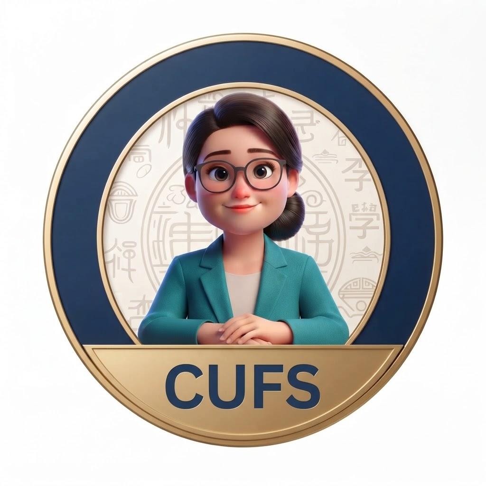

화면을 가로로 돌려주세요
정확한 인토네이션 비교를 위해 16:9 가로 화면이 필요합니다.

李老师의 InTone Viewer
사이버한국외국어대학교 중국어학부
🔤 기본발음듣기
✏️ 문장 입력
📤 음원 업로드
🔊 가이드 듣기
상단의 [✏️ 문장 입력]을 눌러 연습할 문장을 넣어주세요.
기준 가이드 (녹색)
내 발음 (오렌지)
녹음
재생
Report
연습할 중국어 문장 입력
×
생성
今天天气不错
mā má mǎ mà
你好！
我是韩国人。
你是韩国人吗？
📋 오늘의 발음 연습 Report
×
초기화
.txt 저장
전체 복사
🔧 분석 데이터